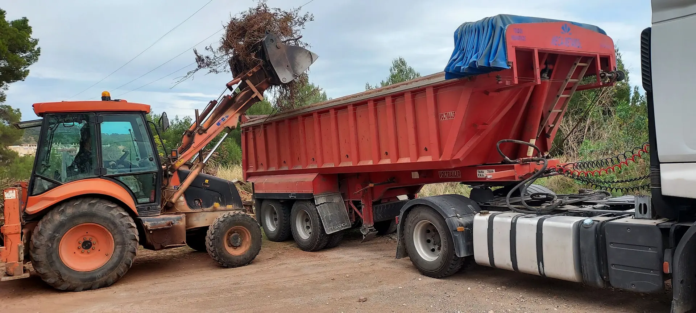
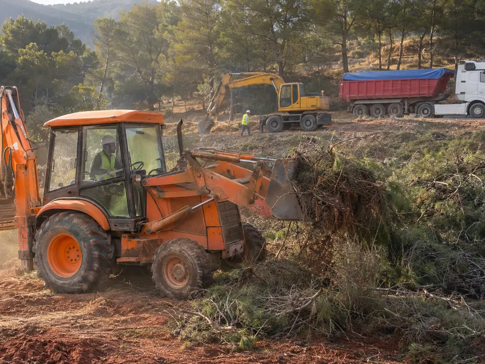
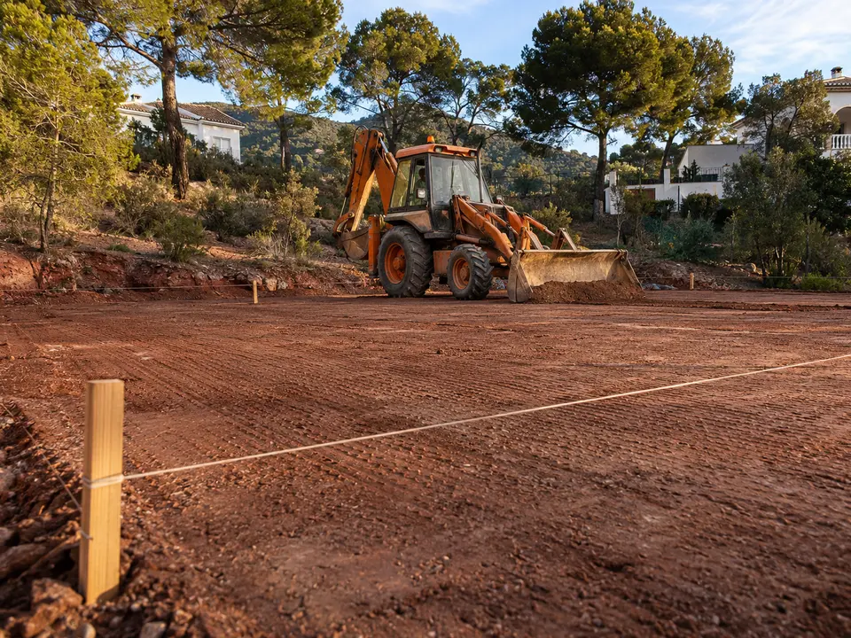
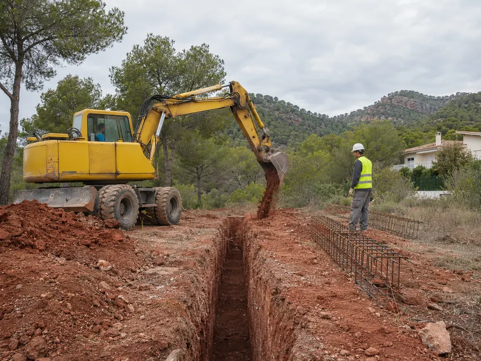
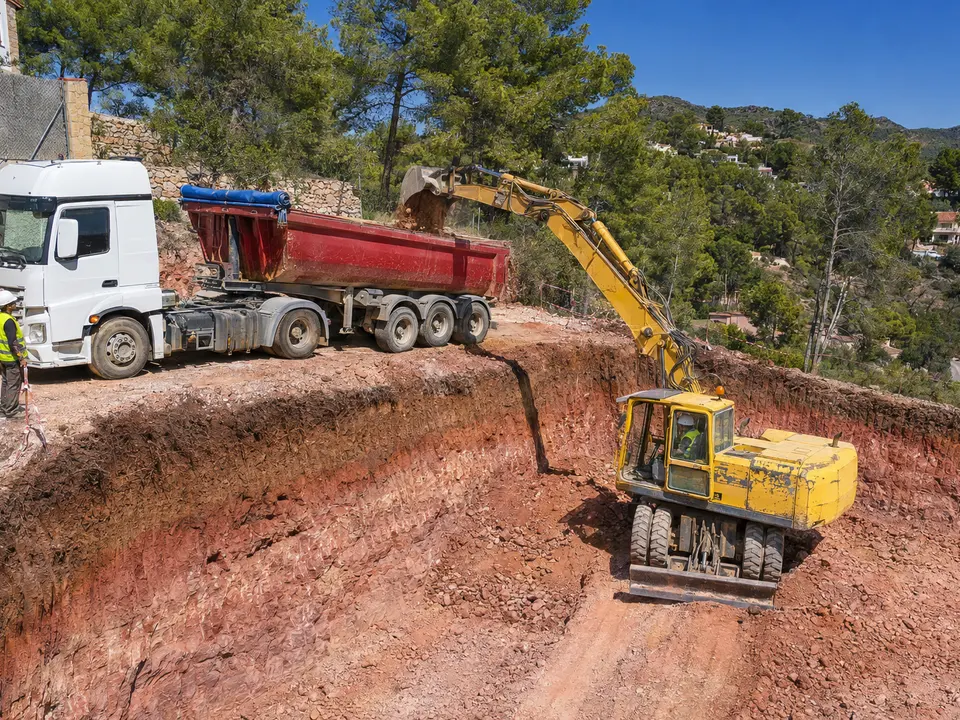
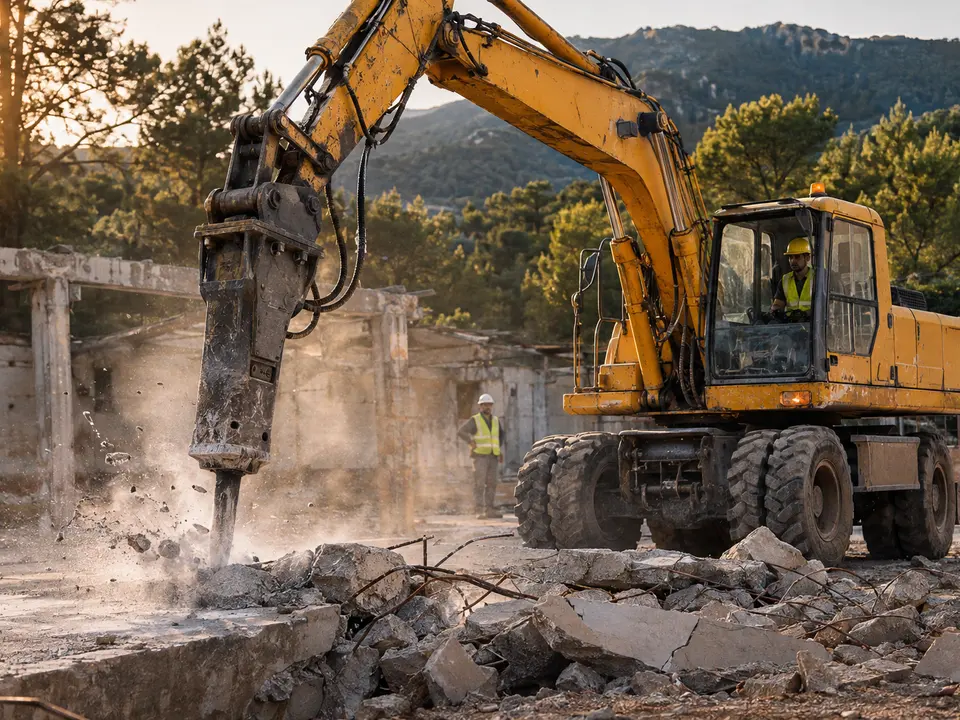
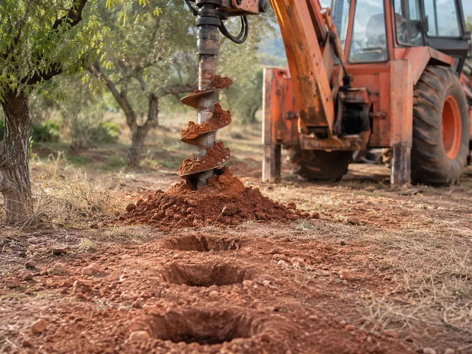
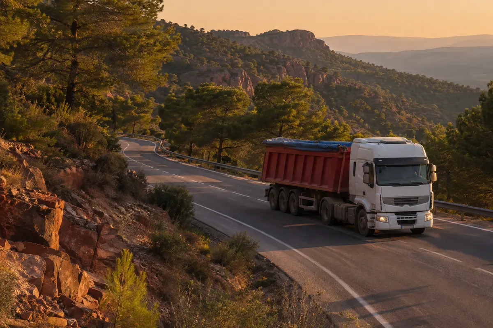
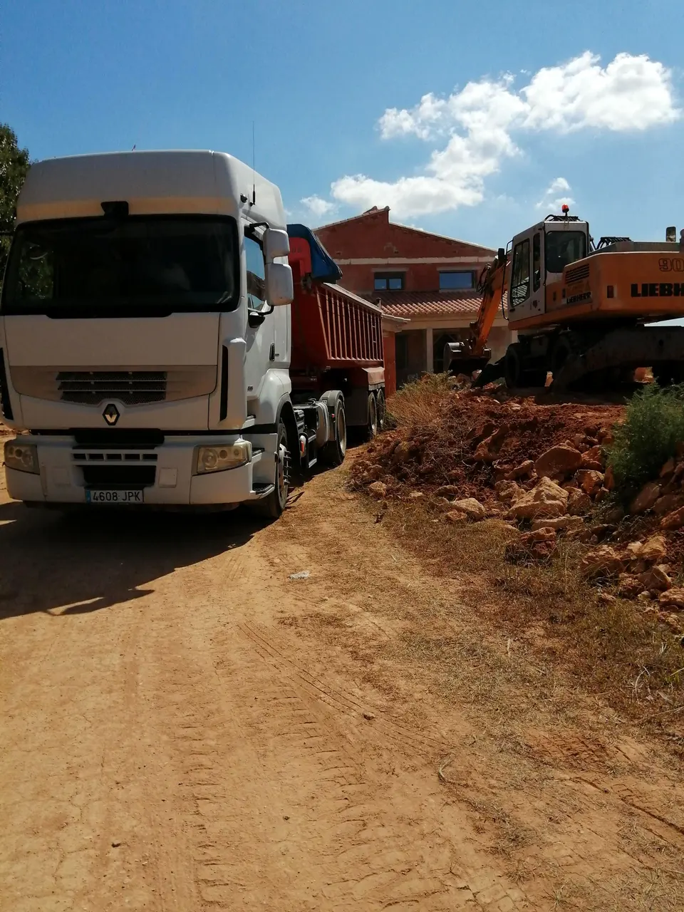

Transportes y excavaciones en Nàquera Excavamos, cargamos y nos lo llevamos.
Desbroces, zanjas y cimientos, vaciados, demoliciones y transporte de tierras con bañera. Desde la CV-315, para Nàquera y toda la zona.
4,9★★★★★7 opiniones en GoogleQué hacemos
Del matorral a la roca. Capa a capa.
Baje despacio: cada capa del terreno es un trabajo que hacemos. Y todo lo que sale, se lo lleva nuestra bañera.
-
±0,00 mSuperficie
Desbroce y limpieza de solares
Quitamos matorral, ramas, raíces y escombros hasta dejar la parcela a la vista. Lo cargamos en la bañera y nos lo llevamos: usted solo ve el terreno limpio.
- Desbroce
- Limpieza de solares
- Retirada de escombros
- Retirada de suciedad

-
−0,30 mTierra vegetal
Nivelación y explanación
Rebajamos y rellenamos hasta dejar la parcela a la cota que pide el proyecto, compactada y con caída donde toca. La base para construir, urbanizar o hacer jardín.
- Excavación y nivelación
- Urbanización de terrenos
- Ajardinamiento

-
−1,20 mArcilla roja
Zanjas y cimientos
Abrimos zanjas rectas y a la profundidad exacta para cimientos, zapatas y encastres. Con el cazo justo para no mover ni un palmo de tierra de más.
- Cimientos
- Zanjas
- Encastre y perforación

-
−3,00 mRodeno
Excavación y vaciados
Vaciados para sótanos, piscinas y plantas bajo rasante. Excavamos, cargamos directamente en la bañera y dejamos los taludes limpios y seguros.
- Vaciados
- Excavación
- Carga directa en bañera

-
−3,60 mRoca y hormigón
Demolición, rotura y barrenado
Cuando aparece la roca o una solera vieja, entra el martillo. Rompemos hormigón, demolemos lo que sobra y barrenamos donde haga falta perforar.
- Demolición
- Rotura y retirada de hormigón
- Barrenado


-
↑ Y arribaA la bañera
Transporte con bañera
Todo lo que sale del agujero se va con nosotros: tierras, escombros, restos de desbroce y material de obra. Sin contenedores que esperar ni terceros que llamar.
- Tierras
- Escombros
- Restos de desbroce
- Material de obra

La flota
Sin catálogo. Esta es la maquinaria.
Lo que ve en las fotos es lo que llega a su obra: la giratoria excava, la retro se encarga del resto y la bañera se lo lleva.
- 01
Giratoria de ruedas
Excava vaciados y zanjas y carga directamente en la bañera.
- 02
Cabeza tractora con bañera
Saca lo que sobra de la obra: tierra, escombro o restos de desbroce.
- 03
Retrocargadora
La todoterreno: desbroza, nivela, abre zanjas y carga. Es la de la portada.

Antes de llamar
¿Cuántos viajes de bañera son?
Ponga las medidas de lo que hay que excavar. La tierra, al sacarla, se esponja y ocupa más: aquí ya lo tenemos en cuenta.
En el terreno144m³
Ya esponjado180m³
Viajes de bañera12aprox.
Cálculo orientativo con unos 15 m³ por viaje. El número real depende del peso del material y del acceso a la obra.
Pedir precio por WhatsApp con estas medidas«Precio increíble.»
Trabajos: excavación y nivelación, demolición, cimientos, barrenado, limpieza de solares, rotura y retirada de hormigón…
«Muy buena.»
- Julieth B.★★★★★
- Kiko G.★★★★★
- José Luis A.★★★★★
Dónde estamos
En la CV-315, a pie de sierra.
Salimos de Nàquera, entre la Serra Calderona y la Horta Nord. Trabajamos en el pueblo y en los municipios de alrededor.
- Nàquera
- Serra
- Bétera
- Moncada
- Massamagrell
- Rafelbunyol
- Puçol
- Sagunt
- Godella
- Burjassot
- Paterna
- Llíria
- Olocau
- València
- Dirección
- CV-315, 46119 Nàquera (Valencia)
- Código Plus
- JJ42+94 Nàquera
Presupuesto
¿Qué hay
que mover?
Cuéntenos el trabajo y dónde está. Le llamamos o se lo miramos en la parcela.
606 46 35 90CV-315, 46119 Nàquera (Valencia)